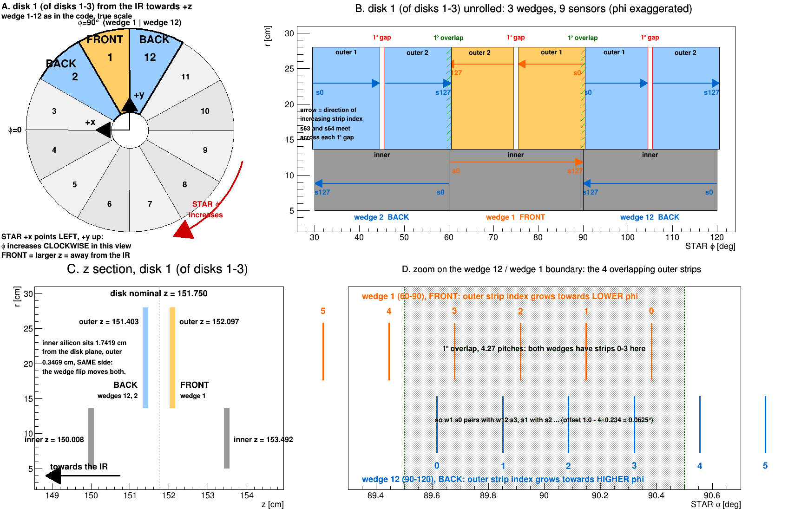
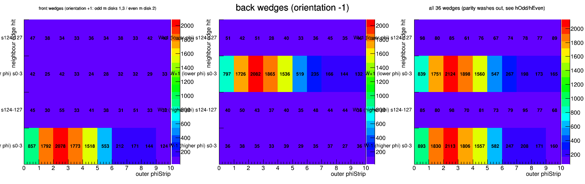
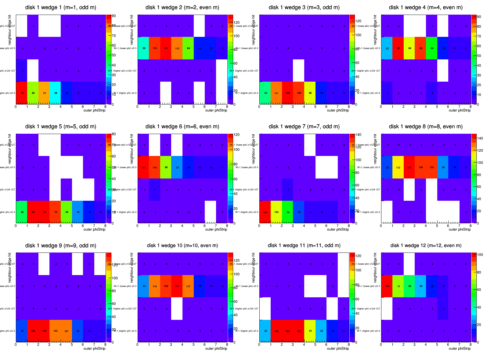
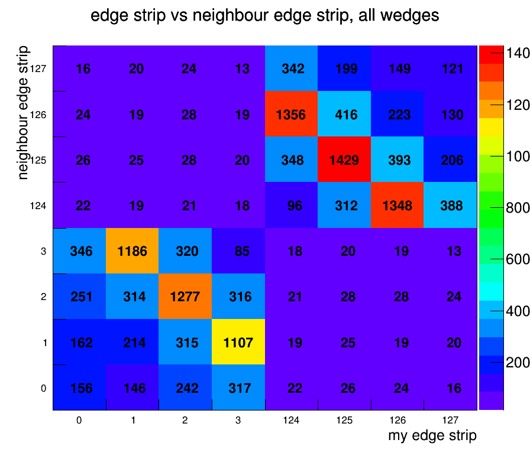

STAR forward upgrade, FST geometry and mapping — Outer sensor overlap | Geometry and mapping | FST cosmic channel map (PDF)
Adjacent FST wedges share a 1° band of silicon. A track crossing it fires both wedges, and which strips light up together says which end of a wedge carries strip 0 — the one thing a bench channel map cannot know, because it does not know which way the module faces once it is bolted on.
120 000 zero-field events settle it: the strip-phi sense our reconstruction uses is the installed one, by 50:1 over the mirrored alternative, and all 36 wedges agree.
Numbering. 1-based throughout, because that is what the code and the data use: StMuFstHit::getWedge() returns 1–36, getDisk() returns 1–3, and StFstDb::stripPhi rejects wedge < 1. Within a disk, m = 1 + (wedge−1)%12, so m runs 1–12 and wedge 1 (m=1) is the 60–90° one. The 0-based iwedgem in StFstDb exists only to index kFstzDirct and friends. This matters here: shifting by one flips the odd/even parity of m, and that parity is the front/back grouping. The older geometry page numbers wedges 0–11, so its wedge 0 is this page's wedge 1.
Everything below uses only the outer sensors and only wedges in the same disk.
 |
| Disk 1, wedges 12, 1 and 2 as StFstDb::stripPhi has them — every angle in the figure is computed with that function's own formula, so the picture is the code's claim rather than a drawing of someone's idea of it (script/fstWedgeDrawing.C). A: the disk seen from the IR towards +z, where STAR +x points left and φ runs clockwise. B: unrolled, with the 1° gaps, the 1° overlaps and the strip directions; note the direction alternates wedge to wedge. C: the z section — inner silicon 1.7419 cm from the disk plane, outer 0.3469 cm, same side. D: the boundary itself, where both wedges have strips 0–3, interleaved. |
FRONT/BACK here follow the current kFstmAsInstalled default (wedge orientation = kFstzFilp × kFstzDirct, no leading minus), which makes odd m front on disks 1 and 3 and back on disk 2. The table on the older geometry page lists the pre-mirror sense, so the two pages label the same wedge oppositely.
For every outer hit in wedge W, record which neighbour edge also fired in the same event:
| y bin | condition |
|---|---|
| y0 | wedge W−1 (higher φ) had a hit in its strips 0–3 |
| y1 | wedge W−1 (higher φ) had a hit in its strips 124–127 |
| y2 | wedge W+1 (lower φ) had a hit in its strips 0–3 |
| y3 | wedge W+1 (lower φ) had a hit in its strips 124–127 |
Wedge index increases as φ decreases (wedge 1 is 60–90°, wedge 2 is 30–60°), so W+1 is the lower-φ neighbour and W−1 the higher-φ one, both taken mod 12 inside the disk.
No tracking, no geometry, no DB geometry call. Every quantity is a hardware index straight out of StMuFstHit: getDisk(), getWedge(), getSensor(), getMeanPhiStrip(). Three consequences:
Checked on the data before using it, not assumed:
The two hypotheses predict disjoint pairs of cells, so they are read straight off. Our mapping (P) puts the same-numbered edges of adjacent wedges against each other, because kFstzDirct = {1,−1,1,−1,...} alternates the strip direction; a physical mirror of that (M) is exactly y0↔y2 and y1↔y3.
| wedges | strips 0–3 pair with | strips 124–127 pair with |
|---|---|---|
| disks 1,3 odd m / disk 2 even m | y0 (W−1 s0–3) | y3 (W+1 s124–127) |
| disks 1,3 even m / disk 2 odd m | y2 (W+1 s0–3) | y1 (W−1 s124–127) |
120 000 zero-field events (Run 24 FieldOff, run24_mudst.txt), 113 491 with FST hits, 2 033 671 FST hits of which 811 072 outer, 16.95 hits/event.
| disk | wedges | hit end | y0: W−1 s0–3 | y1: W−1 s124–7 | y2: W+1 s0–3 | y3: W+1 s124–7 | edge hits |
|---|---|---|---|---|---|---|---|
| 1 | odd m | s0–3 | 2100 P | 58 | 47 M | 47 | 4325 |
| 1 | odd m | s124–127 | 49 | 38 M | 53 | 2250 P | 4053 |
| 1 | even m | s0–3 | 48 M | 52 | 2092 P | 49 | 4559 |
| 1 | even m | s124–127 | 46 | 2243 P | 58 | 38 M | 4410 |
| 2 | odd m | s0–3 | 59 M | 59 | 2402 P | 65 | 4943 |
| 2 | odd m | s124–127 | 59 | 2484 P | 57 | 49 M | 4908 |
| 2 | even m | s0–3 | 2419 P | 57 | 60 M | 59 | 4898 |
| 2 | even m | s124–127 | 66 | 50 M | 62 | 2499 P | 4921 |
| 3 | odd m | s0–3 | 1981 P | 48 | 35 M | 46 | 4320 |
| 3 | odd m | s124–127 | 60 | 44 M | 59 | 2462 P | 5002 |
| 3 | even m | s0–3 | 35 M | 59 | 1976 P | 58 | 4571 |
| 3 | even m | s124–127 | 46 | 2453 P | 49 | 44 M | 4535 |
| total | predicted cells P = 27361 mirrored cells M = 547 | ||||||
M is the accidental floor, not a small signal. In every row the two cells that are neither P nor M hold the same ~50 counts as M, and the strips 60–67 control gives the same rate: ~100 counts per cell on ~8 500 control hits = 1.2%, against M's 1.1%. The mirrored hypothesis has no signal at all.
A second result falls out for free: for every s0–3 row the two s124–127 cells are empty. Same-numbered edges meet, which only an alternating mounting can do — a uniform strip direction would have put every count in those now-empty cells.
 |
| Left: front wedges (orientation +1). Middle: back wedges. Right: all 36 together. Front wedges pair with W−1, back wedges with W+1, and the two mirrored rows are flat at the accidental level. The all-wedge average washes out to 50/50 by construction — the predicted cell alternates with the mounting sense, so only the front/back split carries the answer. |
Per wedge, all 36 agree: M/P runs 0.006 to 0.033 with no outlier, and the mirrored cell equals the accidental level everywhere. A single wedge wired the other way would have shown M ≈ P ≈ 350 in its own panel.
 |
| Disk 1, all twelve wedges separately. Odd wedges light the bottom row (W−1, higher φ), even wedges the row above it (W+1, lower φ), strictly alternating. Every other cell is single digits. |
Predicted-cell coincidences against distance from the wedge edge, summed over all 36 wedges:
| strip from edge | 0 | 1 | 2 | 3 | 4 | 5 | 6 | 7 | 8 |
|---|---|---|---|---|---|---|---|---|---|
| coincidences | 1654 | 3518 | 4160 | 3638 | 3054 | 1072 | 447 | 337 | 288 |
Signal through strip 4 and a 3× drop at strip 5 — the 4.27 strips the 1° band predicts, measured. The deficit at strip 0 is an edge-of-sensor clustering effect: the outermost strip's cluster is truncated, so its mean migrates inward.
Inside the band the two strip grids interleave, so each strip has a definite partner. Counts for my edge strip against the partner wedge's:
| mine \ partner | 0 | 1 | 2 | 3 |
|---|---|---|---|---|
| s0 | 156 | 162 | 251 | 346 |
| s1 | 146 | 214 | 314 | 1186 |
| s2 | 242 | 315 | 1277 | 320 |
| s3 | 317 | 1107 | 316 | 85 |
The pairing is sharp and reversed, as it must be when the strip directions alternate. But it sits one strip off the nominal prediction: stripPhi gives partner sum = 3.27 (w1 s0 ↔ w12 s3, 0.063° apart), the data peaks at sum = 4 with a centroid near 3.8–4.0. That is a 0.5–0.75 strip (2–3 mrad) wedge-to-wedge relative offset from nominal.
This runs on nominal geometry with no survey and no alignment, and 2–3 mrad is exactly the size of FstWedgeAligner's 36 measured per-wedge corrections, so it is most likely just those showing up. It does not touch the conclusion, which is a 30°-scale question. It does suggest something useful: this method measures wedge-to-wedge relative φ alignment to well under a strip pitch, without tracking.
 |
| Edge strip against partner edge strip, all wedges. Two blocks, each anti-diagonal: the low ends (0–3) pair with the partner's low ends, the high ends (124–127) with its high ends, in reversed order. |
This settles φ, not z. The two outer sensors of a coincident pair differ by only
0.69 cm in z, far below what the 2.875 cm r-strip pitch can resolve, so the
front/back question does not follow from this measurement on its own — only through
the rigid-body argument that turning a wedge over reverses both senses.
The inner sensors are also untouched: they span exactly 30° and have no overlap,
and a track crosses a wedge at one radius, so same-wedge inner/outer pairs are different
particles and carry no phi relation (measured: flat). The way in is two disks — for
a vertex-pointing track r scales with z (r3/r1 = 178.781/151.75 = 1.178), so a track with
r1 in 11.57–13.625 cm is inner on disk 1 and outer on disk 3 at the same φ.
Expect sum = const for the 1–3 pair and difference = const whenever disk 2 is involved,
since kFstzFilp inverts it. Narrow band, so it needs much more data.
akio@bnl.gov